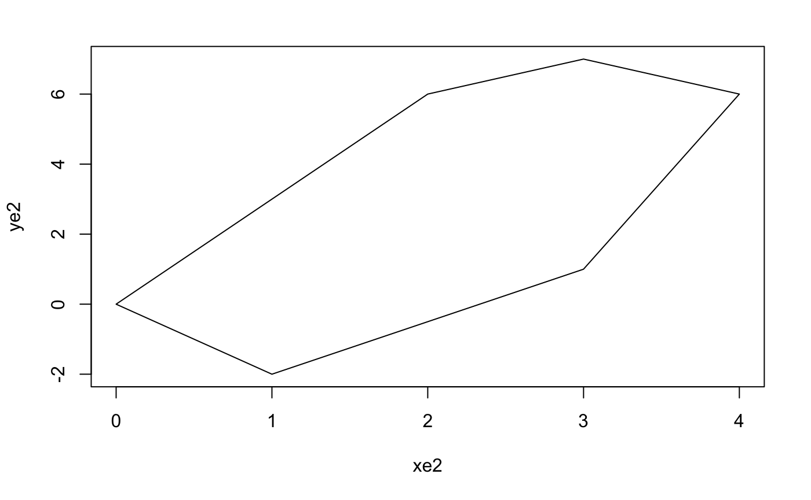

Recall from the introduction that the area $$A = \int_{a}^{b} p(x)\ dx \approx (b-a) \ \frac{1}{n} \sum_{i=1}^{n} p(X_i),$$ where $X_1, X_2,...,X_n$ is an uniform $U[a,b]$ distribution sample.
Instead of using it to estimate $\pi$ or the area of polygon, a more general usage is to estimate the complicated integral.[19] Another well-known method to approximate an integral is by Simpson's rule, which was first introduced in A-level study before. The formula is given by the following:$$A = \int_{a}^{b} f(x)\ dx \approx \frac{\Delta{x}}{3}(f(x_0) + 4f(x_1) + 2f(x_2) + 4f(x_3) + 2f(x_4) + ... + 4f(x_{n-1})+f(x_n)),$$ where $n$ is positive even, $\Delta{x} = \frac{b-a}{n}$, $x_i = a + i\Delta{x}$ and $i = 0,1,...,n$.[13]
In R, we can use the following function to compute the integration by Simpson's rule:
def simpsons_rule(f, a, b, n=10000):
"""Composite Simpson's rule. n must be a positive even number."""
if n <= 0 or n % 2 != 0:
return 'Please enter positive even number n'
if a in (float('inf'), float('-inf')):
a = 1e4 if a > 0 else -1e4
if b in (float('inf'), float('-inf')):
b = 1e4 if b > 0 else -1e4
h = (b - a) / n
total = f(a) + f(b)
for i in range(1, n):
total += (4 if i % 2 else 2) * f(a + i * h)
return total * h / 3
Example 5.1 Estimate $\int_{0}^{1} e^{-x^2} \ dx$ by Monte Carlo method and by Simpson's rule.
By Monte Carlo method:
import random
from math import exp
random.seed(2019)
n = 10000
x = [random.uniform(0, 1) for _ in range(n)]
a = sum(exp(-t * t) for t in x) / n
print(a) # close to 0.7468
## [1] 0.7478853By Simpson's rule:
from math import exp
from geometry_module import simpsons_rule
f = lambda x: exp(-x ** 2)
print(simpsons_rule(f, 0, 1, 10))
## [1] 0.7468249Example 5.2 Estimate the length of the curve $y = \ln{x}$ over the interval $[1,4]$.
Arc length of a curve over $[a,b]$ is $\int_{a}^{b} \sqrt{1 + (\frac{dy}{dx})^2} \ dx$, which is $\int_{1}^{4} \sqrt{1 + \frac{1}{x^2}} \ dx$ in this case. The exact integral is not easy to be determined, but we can still use the Monte Carlo method or Simpson's rule to estimate it easily.
import random
from math import sqrt
random.seed(2019)
n = 10000
x = [random.uniform(1, 4) for _ in range(n)]
a = 3 * sum(sqrt(1 + t ** -2) for t in x) / n
print(a)
## [1] 3.344581The exact integral is $3.342800$ to 6 decimal places, or $\sqrt{17} - \sqrt{2} + \frac{1}{2} \ln \left(18 \sqrt{2}-3 \sqrt{17}-2 \sqrt{34}+27\right)-\frac{3}{2}\ln{2}$.
Notice that the variance of area depends on the variance of the estimator, which is $p(X)$ in this case. Then if we can reduce the variance of the estimator, the estimation will be more accurate. One important technique to reduce variance, is the antithetic variates method.[14]
Instead of the original method, Monte Carlo method with antithetic variables is to set up the second variable that depends on the original variable, which the variance of the variables sum is less than the variance of the original variable.[19]
One of the basic properties of variance is $\text{Var}(X + Y) = \text{Var}(X) + \text{Var}(Y) + 2\text{Cov}(X,Y)$, which implies that if the covariance of $X$ and $Y$ is negative, then the variance of $X+Y$ is less than the sum of their variance. If we can reduce the variance, then the estimation will be improved.
For example, if $Y = 1 - X$, then $$\text{Cov}(X, 1-X) = E\left(X(1-X)\right) - E(X)E(1-X) = E(X) - E(X^2) - E(X)\left(1-E(X)\right) = - \text{Var}(X),$$ which is a negative value, as the variance is positive (or zero if given constant values).
But when we are using Monte Carlo method, we will need to consider $\text{Cov}\left(p(X),p(1-X)\right)$, so we can't easily deduce the sign of the covariance. But think about the monotonicity of the function, if a function $p$ is not monotonic over a region, for example $p(x) = \cos{x}$ over $[-1,1]$, then let $Y = X$ and $p(X) = p(Y)$, which implies that we just repeat the original method again. In simple, if $p$ is monotonic, then $\text{Cov}(p(X),p(Y))$ is negative.
Example 5.3 Estimate $\int_{0}^{1} e^{-x^2} \ dx$ again. Notice that the function $e^{-x^2}$ is monotonic decreasing over $[0,1]$, then a Monte Carlo method with antithetic variables is $$\frac{1}{n} \sum_{i=1}^{n} \left(\frac{1}{2}e^{-X_i^2} + \frac{1}{2}e^{-(1-X_i)^2}\right),$$ and the code looks like this:
import random
from math import exp
random.seed(2019)
n = 10000
x = [random.uniform(0, 1) for _ in range(n)]
y = [1 - t for t in x]
a = sum((exp(-t * t) + exp(-v * v)) / 2 for t, v in zip(x, y)) / n
print(a)
## [1] 0.7464516The difference between the original and arithetic is not obvious if only run once, so let's test it more:
import random
from math import exp
random.seed(2019)
n = 10000
a1, a2 = [], []
for _ in range(10):
x = [random.uniform(0, 1) for _ in range(n)]
y = [1 - t for t in x]
a1.append(sum(exp(-t * t) for t in x) / n)
a2.append(sum((exp(-t * t) + exp(-v * v)) / 2 for t, v in zip(x, y)) / n)
print(' Original Antithetic')
for i in range(10):
print(f'{i + 1:>4} {(a1[i] - 0.746824) * 1000:>10.4f} {(a2[i] - 0.746824) * 1000:>10.4f}')
## Original Antithetic
## 1 -1.272708 0.13550731
## 2 0.215526 0.16875908
## 3 -1.066277 -0.35460663
## 4 -1.525344 0.07371390
## 5 -1.148357 -0.25150037
## 6 1.637443 0.30984076
## 7 1.331888 0.35226570
## 8 2.680033 0.27922990
## 9 -2.010939 -0.06512753
## 10 0.576300 0.06304276The exact integral is $0.746824$ to 6 decimal places, and we 1000 times the difference between the estimated value and the exact value. It is obvious that, the antithetic method is an improvement to the original method, as the variance is reduced.
Also, if we uniformly generate $X$ over $[a,b]$, then $Y = a + b - X$ is still within the range $[a,b]$, and $\text{Cov}(X,Y)$ is negative.
Example 5.4 Estimate the length of the curve $y = \ln{x}$ over the interval $[1,4]$ with improved method.
import random
from math import sqrt
random.seed(2019)
n = 1000000
a1, a2 = [], []
for _ in range(10):
x = [random.uniform(1, 4) for _ in range(n)]
y = [5 - t for t in x]
a1.append(3 * sum(sqrt(1 + t ** -2) for t in x) / n)
a2.append(3 * sum((sqrt(1 + t ** -2) + sqrt(1 + v ** -2)) / 2
for t, v in zip(x, y)) / n)
print(' Original Antithetic')
for i in range(10):
print(f'{i + 1:>4} {(a1[i] - 3.3428) * 1000:>10.4f} {(a2[i] - 3.3428) * 1000:>10.4f}')
## Original Antithetic
## 1 0.16577621 -0.12269626
## 2 0.22200712 0.02078038
## 3 -0.22798658 0.08306721
## 4 -0.12435955 0.06873986
## 5 -0.39593390 -0.26677621
## 6 0.09816367 -0.11048513
## 7 0.35040366 0.03770652
## 8 -0.15715313 0.13883513
## 9 -0.18167042 -0.09729905
## 10 -0.06786056 -0.05691587Now we can write the function of Monte Carlo integration in R.
import random
def monte_carlo_integral(f, a, b, n=10000, method='original'):
"""Estimate the integral of f over [a, b].
method='original' : plain Monte Carlo
method='antithetic' : mirrored pairs to cut the variance
"""
if n <= 0:
return 'Please enter positive number n'
if a in (float('inf'), float('-inf')):
a = 1e4 if a > 0 else -1e4
if b in (float('inf'), float('-inf')):
b = 1e4 if b > 0 else -1e4
xs = [random.uniform(a, b) for _ in range(n)]
if method == 'antithetic':
vals = [(f(t) + f(a + b - t)) / 2 for t in xs]
else:
vals = [f(t) for t in xs]
return (b - a) * sum(vals) / n
In the case of Inf, just set a large number and evaluate it. If the integral of the given function $f$ is converge when $x$ tends to infinity, then the $f(x)$ tends to $0$. As we are estimating the integral, it won't make a huge difference whether the upper bound is $10000$ or $100000$ or infinity.
Now think about using Monte Carlo integration to estimate the area of polygon, as we can apply the antithetic method to reduce the variance, it is possible to apply the same idea to have a better estimation. However, this method only can apply to the convex and bounded concave polygon, if we want to apply the integration technique. As we can find the maximum/minimum of the bounds, and divide them into the monotonic functions.
But more generally, we can still apply the antithetic method with the statistical Monte Carlo simulation, like counting the points inside the polygon. If we generate 10000 points in both $x$ and $y$ coordinates as an uniform $X \overset{\text{i.i.d.}}{\sim} U[a,b]$ and an uniform $Y \overset{\text{i.i.d.}}{\sim} U[c,d]$ distribution sample respectively, where $a,b$ are the minimum and maximum of $x$-coordinate of the polygon, $c,d$ are the minimum and maximum of $y$-coordinate of the polygon. Then we can find other 3 pairs of $x$ and $y$, which are $(a+b-X,Y),(X,c+d-Y)$ and $(a+b-X,c+d-Y)$.
Now rewrite the area_mc_method_v3, to get the version 4:
import random
from geometry_module import point_inside_v2, bounding_box
def area_mc_method_v4(x, y, k=5000, point_method='wind', mc_method='original'):
"""Monte Carlo area estimate, with optional antithetic sampling.
mc_method='antithetic' pairs every random point with its mirrored
point inside the bounding box, which cancels part of the noise.
"""
xmin, xmax, ymin, ymax = bounding_box(x, y)
box = (xmax - xmin) * (ymax - ymin)
def inside(px, py):
return point_inside_v2(x, y, px, py, point_method) == 'inside'
if mc_method == 'antithetic':
count = 0
for _ in range(k):
px = random.uniform(xmin, xmax)
py = random.uniform(ymin, ymax)
count += inside(px, py)
count += inside(xmin + xmax - px, ymin + ymax - py)
return count / (2 * k) * box
count = sum(1 for _ in range(k)
if inside(random.uniform(xmin, xmax), random.uniform(ymin, ymax)))
return count / k * box
The function above also add more fectures, makes it more general to use.
But this method is just like, reflect the points around and get the average result. For some polygons, it might even reduce the accuracy. The more complexity, the less accurate. But still, this method should work well for all convex polygons, so if the type of polygon is convex, then the function will always use the antithetic method.
Example 5.5 Estimate the area of polygons by the Monte Carlo method with antithetic variables, and compare the difference with the original method.
# Polygon used in the comparison below (see Figure 5.1)
xe2 = [4, 3, 2, 0, 1, 3]
ye2 = [6, 7, 6, 0, -2, 1]
print('vertices:', list(zip(xe2, ye2)))

(xe2,ye2)import random
from geometry_module import area_mc_method
xe2 = [4, 3, 2, 0, 1, 3]
ye2 = [6, 7, 6, 0, -2, 1]
random.seed(2019)
print(' Original Antithetic')
for _ in range(10):
v3 = area_mc_method(xe2, ye2, 5000, 'wind')[0]
v4 = area_mc_method(xe2, ye2, 5000, 'wind')[0]
print(f'{v3 - 17.5:>10.4f} {v4 - 17.5:>10.4f}')
## Original Antithetic
## 1 -0.2040 0.1076
## 2 -0.1768 -0.0328
## 3 -0.2488 0.1544
## 4 0.3032 -0.0904
## 5 -0.2200 0.1004
## 6 0.3128 0.1184
## 7 0.4424 0.0230
## 8 0.1472 0.0140
## 9 -0.4000 0.1004
## 10 -0.1912 -0.1174Another approach to reduce variance, is to introduce a control variate $g$, which is a function simliar to $p$, and can be solved analytically.[15][19]
If the integral of $g$ over $[a,b]$ is $I(g)$, then the integral hence will be $$A = \int_{a}^{b} p(x)\ dx = \int_{a}^{b} \left(p(x) - g(x)\right)\ dx + \int_{a}^{b} g(x)\ dx = \int_{a}^{b} \left(p(x) - g(x)\right)\ dx + I(g).$$
As $g$ similar to $p$, the variance of $p-g$ should be smaller than $p$, then $$A \approx (b-a) \ \frac{1}{n} \sum_{i=1}^{n} \left(p(X_i)-g(X_i)\right) + I(g).$$
Example 5.6 Estimate the length of the curve $y = \ln{x}$ over the interval $[1,4]$ with improved method.
It is not hard to check that $\sqrt{1+\frac{1}{x^2}} < 1 + \frac{1}{x}$ for all $x > 0$, so we can let $g(x) =1+ \frac{1}{x}$. Then $$A \approx \frac{3}{n} \sum_{i=1}^{n} \left(\sqrt{1+\frac{1}{X^2_i}}-1-\frac{1}{X_i}\right) + \int_{1}^{4} \left(1 +\frac{1}{x}\right) \ dx = \frac{3}{n} \sum_{i=1}^{n} \left(\sqrt{1+\frac{1}{X^2_i}}-1-\frac{1}{X_i}\right) + 3 + 2\ln{2}.$$
import random
from math import sqrt, log
random.seed(2019)
n = 1000000
a1, a2, a3 = [], [], []
for _ in range(10):
x = [random.uniform(1, 4) for _ in range(n)]
y = [5 - t for t in x]
a1.append(3 * sum(sqrt(1 + t ** -2) for t in x) / n)
a2.append(3 * sum((sqrt(1 + t ** -2) + sqrt(1 + v ** -2)) / 2
for t, v in zip(x, y)) / n)
a3.append(3 * sum(sqrt(1 + t ** -2) - (1 + t ** -1) for t in x) / n
+ 2 * log(2) + 3)
print(' Original Antithetic Control')
for i in range(10):
print(f'{i + 1:>4} {(a1[i] - 3.3428) * 1000:>10.4f}'
f' {(a2[i] - 3.3428) * 1000:>10.4f}'
f' {(a3[i] - 3.3428) * 1000:>10.4f}')
## Original Antithetic Control
## 1 0.21223283 0.18938566 -0.14893086
## 2 0.15050225 -0.01046107 -0.17487785
## 3 -0.11634257 0.14409480 0.11449610
## 4 -0.61327206 -0.16418989 0.34262107
## 5 -0.07992773 -0.04965741 -0.01253572
## 6 0.07871686 -0.03515993 -0.05556916
## 7 -0.01743192 0.01432607 -0.01329278
## 8 -0.01333745 0.01867702 0.02072985
## 9 0.52673886 -0.08700540 -0.21474933
## 10 0.42469550 0.03696982 -0.25150356Since it is not easy to find the $g$ just by programming, the monte_carlo_integral function won't include this method.
@theonaku